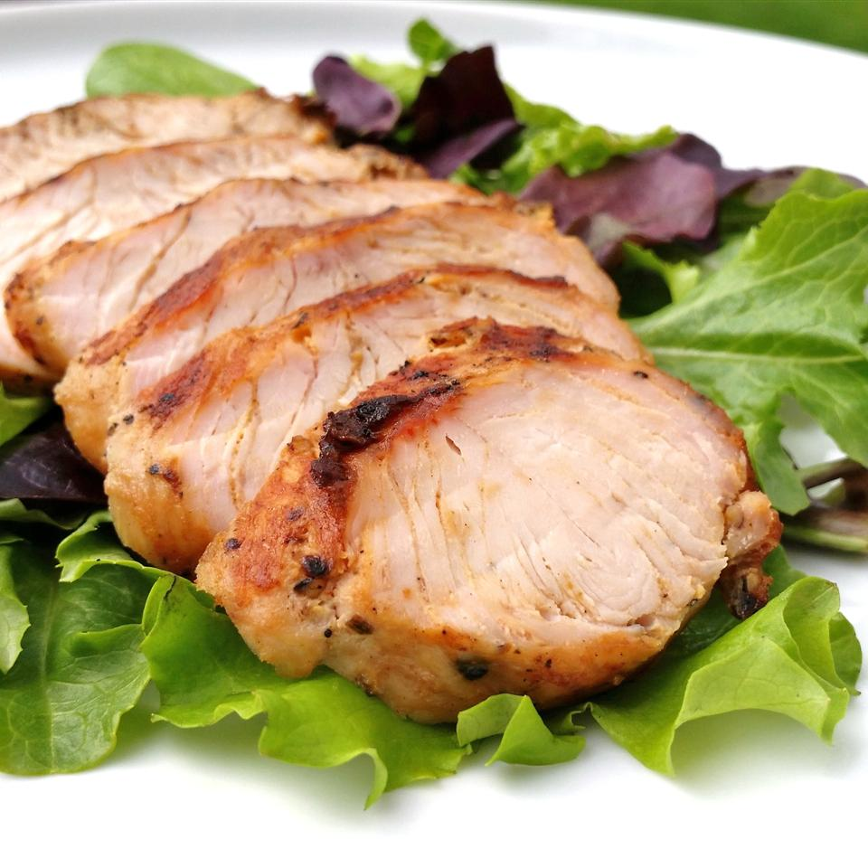

Marinated Turkey Breast

Easy to prepare!
This turkey breast marinade recipe has been passed down from
generation to generation. These always turn out juicy and tender
no matter how long they are left on the grill. It's easy to prepare
but always best when marinated for at least 4 hours.
Ingredients
- 2 cloves garlic, peeled and minced
- 1 tablespoon finely chopped fresh basil
- ½ teaspoon ground black pepper
- 2 (3 pound) boneless turkey breast halves
- 6 whole cloves
- ¼ cup vegetable oil
- ¼ cup soy sauce
- 2 tablespoons lemon juice
- 1 tablespoon brown sugar
Steps
- Mix garlic, basil, and pepper together in a small bowl; rub
over turkey breasts. Insert 1 clove into each end of turkey
breasts and 1 in the center.
- Mix oil, soy sauce, lemon juice, and brown sugar in a large,
shallow dish. Place turkey in the dish and turn to coat.
Cover and marinate in the refrigerator at least 4 hours.
- Preheat an outdoor grill for high heat and lightly oil the grate.
- Discard marinade and place turkey on the preheated grill.
Close the lid and cook until turkey is no longer pink in the
center and the juices run clear, about 15 minutes on each side.
An instant-read thermometer inserted into the center should
read at least 165 degrees F (74 degrees C).